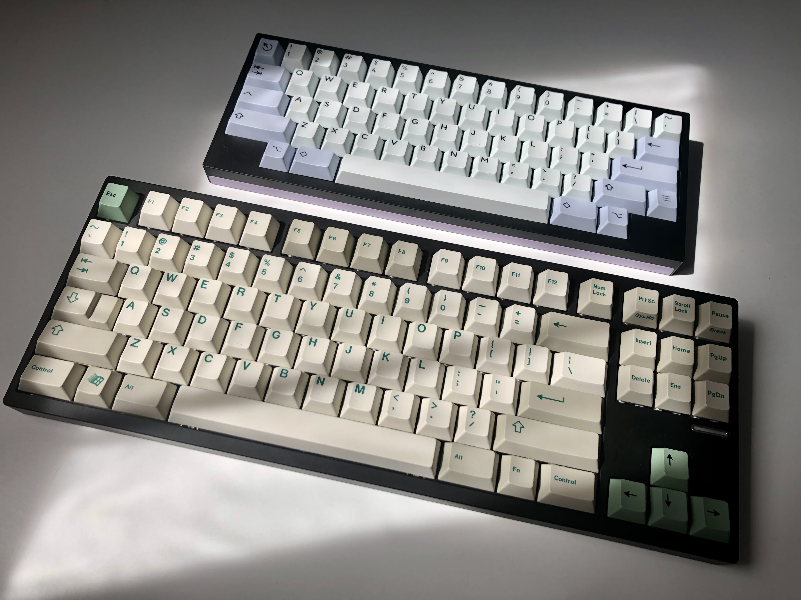

Keyboards

I've used many keyboards throughout my years. My first mechanical keyboard was a cheap Hcman TKL with blue switches I bought for like $20 in 7th grade. I used that for a while until my friends started complaining that it was too loud through my microphone. For xmas that year I got a Razer Blackwidow Elite with Razer orange switches, and I was happy. I used that for about 2 years until the volume wheel broke, and would shoot the volume to 100%, which was really frustrating and not good for my ears. By that point I wasn't a big fan of the gamer aesthetic, and knew I could get a better replacement than another gaming keyboard. After some research, I found the Keychron C1, and got that with Gateron brown switches for my birthday. I was happy with it, it was significantly less expensive than the Razer, it typed well, sounded better, and I liked the TKL formfactor better. After that thought, things took a turn.

While researching keyboards to replace by ear-destroying Razer, I stumbled upon the custom mechanical keyboard community. At first, the prices turned me away from the hobby. "Who would spend that much on a keyboard?" I thought to myself. Well, that didn't stop me from looking at the boards built by people who did have the money, and watching keyboard videos on YouTube. Eventually, some enticing entry-level custom boards were announced, among them, the QK80 from qwertykeys. It had critical aclaim from several people, saying that it was as good as boards twice the price. I had some extra money and the semester was ending. Fuck it, why not. It sits now on my desk built with an FR4 plate, Jwick Taro switches, and 21KB keycaps. Was it worth it? Well, it's certainly the nicest keyboard I've ever typed on.
Anyways, as Black Medallion once said, this is the first but it ain't the last , and later qwertykeys would announce they were selling a second round of their 60% keyboard (a compact layout without the F row and arrow keys). Custom keyboard sales usually run in limited pre-order sales, and when it's over, it's over, hence why it was "round 2". I had already considered getting a small keyboard for the office, as the board I was using was hard to fit in my bag (more on that board below). I ended up getting this one too, and I'm typing on it right now. I got it in the HHKB layout, built with the aluminium plate, PBTFans keycaps, and Jwick semi-silent linear switches. Despite only being "semi-silent", they're quieter than most other keyboards in the office. Was this one worth it? Well, I'm certainly getting good use out of it. I use it with my iMac G5, my work and personal laptop, and sometimes my even my desktop. This is likely my last keyboard for a long, long, time though, as I can't justify spending more money on this hobby, especially when I already have some pretty nice shit.
While "mechanical" keyboards are nicer to type on, there are some good rubber dome keyboards out there as well. The line between "mechanical" and "non-mechanical" keyboards is confusing and nuanced, as what defines "mechanical" is tough to determine, some rubber domes, such as Topre, are considered "mechanical" by some, while others aren't. It's weird; still, these are the commonly used terms. Anyways, most mechanical switches tend to be louder than rubber domes as well, so in the office they can have their disadvantages. At work I used an NMB RT-101 featuring NMB dome with slider switches. The slider on top of the dome makes mounting keycaps easier and makes the bottom out feel less mushy than standard rubber domes. NMB domes are strangely indivdually glued to the membrane, rather than being a sheet on top of it. It's not bad, although it's not perfect either. It's definitely better than the Dell chiclet keyboards we're given though, and it has a cool retro look and a pencil holder. Rubber domes produce a different tactile feeling than the widely used MX-style switches, being more rounded and tactile throughout the keystroke as opposed to a bump for part and linear travel for the rest, usually after actuation, which is preferrable to some.

I've been working on my own custom-designed keyboard as well. It's a 40% alice-esque layout, and 3D printed. It bears resemblance to Flurple's CX-13, but mine is symetrical and has a few more keys. For the board I got Gateron milky black switches (a cheap, quality, heavy linear switch), and this keycap set.
Overall, keyboards are pretty neat. Considering a lot of the hobby revolves a lot around people designing and selling CNCed aluminium custom boards, it's not for everyone, since buying them comes at a price and designing and selling them requires a plethora of knowledge and skill to do. Still, there are things for everyone, even the Keychron I mentioned at the start is a nice board, and can be easily modified into something personal. There's also tons of interesting vintage boards that I barely touched on. There's a lot of creativity in this hobby, and you get to really appreciate a piece of equipment you use every day, which is nice. Some of the things might not be worth the money, but it's not the worst hobby in that regard (looking at you, car guys). Maybe my insecurities are showing in this paragrah :P anyways thanks for listening to me ramble about rectangles with buttons.